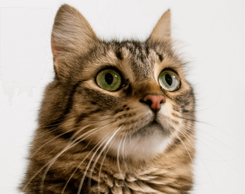
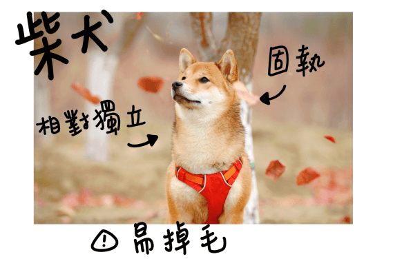
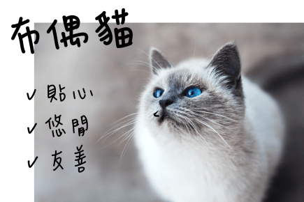
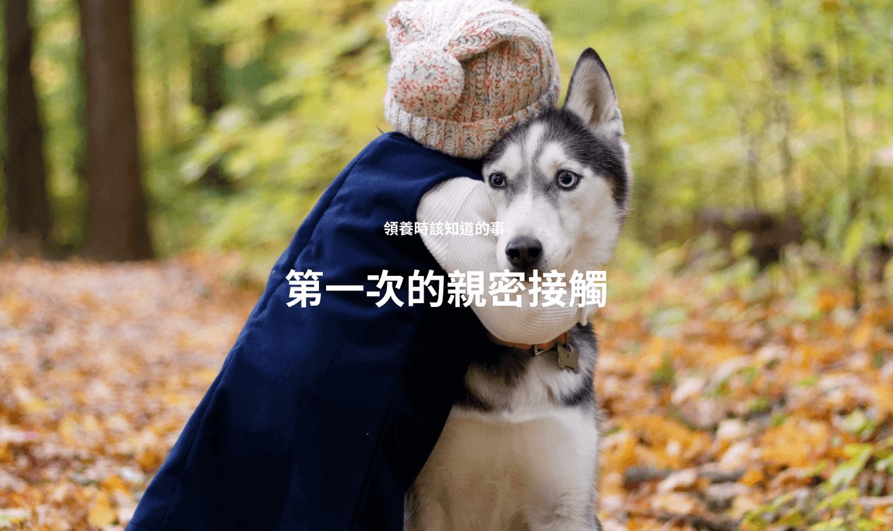
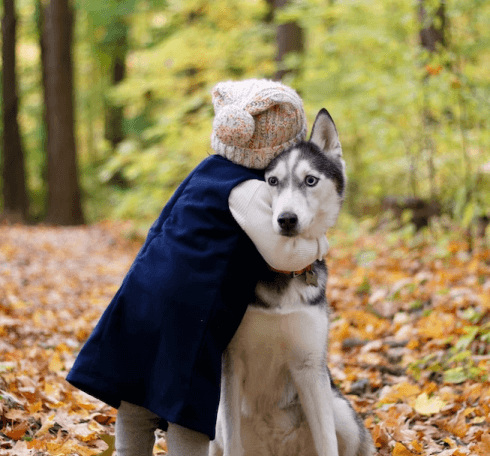
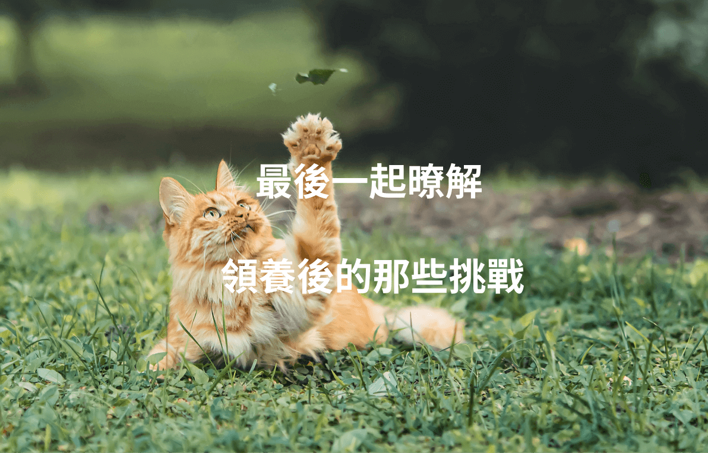

個性
了解自己的個性
「我」適合什麼樣的毛孩？從了解自己開始，到底是一隻愛戶外活動的狗狗適合你？還是喜歡窩在你旁邊撒嬌的貓咪呢？
生活 & 家庭
我的生活型態和家庭成員
對人需求的程度會依照毛孩個體品種差異而有所不同，好好檢視自己的生活型態和時間的彈性，以及未來可能的改變。
年齡
毛孩在不同年紀會有不同表現
幼犬、幼貓？還是成犬、成貓？領養寵物從小養才好嗎？其實重要的不是牠的年紀，而是你是否了解牠的需求。
獨特性
了解每隻毛孩的獨特個性
毛孩的個性會因為品種、個體而有所差異，除了認識品種特性外，還有什麼方式可以多了解毛孩嗎？
期待
我們對生活的期待
每個人養毛孩都會有憧憬，你是為了什麼想讓毛孩加入你的生活呢？這些不同的「期待」和適合「你」的毛孩有很大的關係。

緣分
神秘的緣份
多到現場和毛孩互動，在認識「你」的毛孩之後，那些想像中喜歡的品種、花色、長相、性別，可能都不再是最重要的考量了！
狗狗先生 郁傑 來告訴你各個品種的狗狗
你在生活中能不能滿足牠的這些天性需求？ 而你期待狗狗成為什麼樣子的狗狗？


貓貓學者 立遠 來告訴你各個品種的貓貓
你在生活中能不能滿足牠的這些天性需求？ 而你期待貓貓成為什麼樣子的貓貓？


把主導權給毛孩
讓狗狗用自己的時間、步調來認識你
在不同的場域會有不一樣的行為表現
人類常見的 NG 行為
請保持冷靜
別興奮的和狗狗打招呼
跟狗狗初次見面時切勿過於激動
請縮小自己
龐然大物拔山倒樹而來
狗狗對於身形偏魁武的民眾較於容易緊張害怕，建議可以側面蹲下、縮小自身的身體面積，降低狗狗的警覺及害怕度

讓牠慢慢認識你
情不自禁撫摸狗狗
在不清楚狗狗的個性狀況及身體地雷點時，勿過於激動撫摸狗狗全身，需先讓狗狗認識你，熟悉你的味道後再以輕柔的方式撫摸
